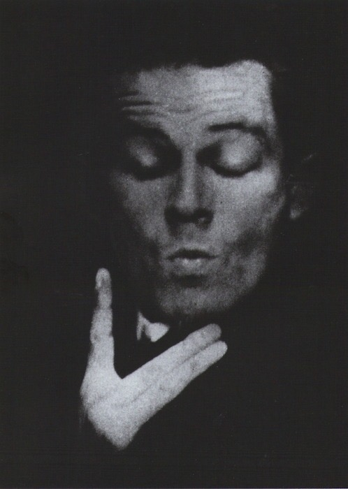
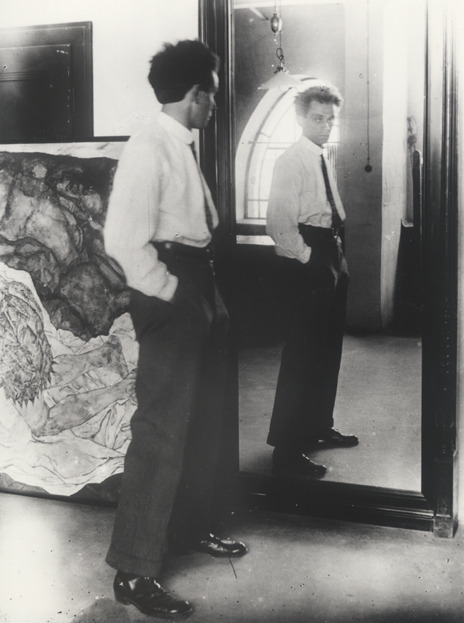

: 에곤 쉴레는 1890년 오스트리아 빈 근교의 툴른에서 태어났습니다.
철도청 고급 관료 집안에서 태어나 유복한 유년 시절을 보냈으며, 위로 두 누이 아래로 여동생이 있었습니다.
2살경부터 색연필과 종이를 잡고 그림을 그렸다고 하며, 톨른역의 역장이었던 아버지의 영향을 받아 어릴 때는 철도 미니어처를 가지고 노는 것을 좋아했고
그것들을 그린 데생도 몇 점 남아있죠. 그의 아버지는 그가 어릴 때부터 열성적으로 그림을 그리자 그의 스케치북을 태워버렸다는 일화도 남아있습니다.
실레의 아버지는 그가 15살 때 결혼 전부터 앓았던 매독-전염병의 일종-으로 정신착란 증세를 보이다 죽었습니다.
그의 어머니는 그에게 별로 관심이 없었고 사이도 좋지 않았다고. 실레는 아버지의 죽음에도 슬퍼하지 않고 무덤덤한
어머니에게 충격을 받고서는, 이때부터 아버지를 우상화하고 어머니를 혐오하기 시작했습다. 이는 실레에게 있어서 최초의 불신이었습니다.
이후 평생 어머니와 불화한 채 살았습니다.
그의 삼촌과 아버지는 에곤이 그들과 같은 철도 기술자가 되기를 기대해서 클로스터노이부르크에 위치한 고등학교에 진학시켰지만
에곤의 성격에 말을 잘 들을 리도 없고 미술 외의 과목에는 별 관심이 없었다고 합니다.
하지만 에곤은 여기서 미술에 대한 재능을 나타내 미술 선생님이 그것을 알아차려 학업을 돕습니다.
About Egon Schiele



유년기
청소년기
: 에곤은 16세에 빈 미술학교 입학 허가를 받을 정도로 미술적 감각과 재능이 뛰어났지만,
아카데미의 보수적인 학풍과 교수들과의 갈등으로 1909년 학교를 그만두고 나왔습니다.
그리고 이 시기에 빛의 화가, 구스타프 크림트를 만나 빈 분리파의 주요 구성원이 되고, 학교를 나온 후에는
몇몇 친구들과 <신예술가 그룹>을 결성합니다.
동경하던 화가인 클림트의 영향을 많이 받아 초기에 그래픽적이고 드라마틱한 양식의 그림을 많이 그렸지만, 시간이 지날수록 점차 클림트의 영향에서 벗어나 점점 급진적인 표현주의자로서의 독자적인 스타일을 발전시켜 나갑니다. 그는 죽음에 대한 공포와 내밀한 관능적 욕망, 그리고 인간의 실존을 둘러싼 고통스러운 투쟁에 관심을 기울이며, 의심과 불안에 싸인 육체를 왜곡되고 뒤틀린 형태로 거칠게 묘사했습니다. 때때로 작품의 배경을 비워두어 고독과 단절감을 강화시키기도 했습니다.
동경하던 화가인 클림트의 영향을 많이 받아 초기에 그래픽적이고 드라마틱한 양식의 그림을 많이 그렸지만, 시간이 지날수록 점차 클림트의 영향에서 벗어나 점점 급진적인 표현주의자로서의 독자적인 스타일을 발전시켜 나갑니다. 그는 죽음에 대한 공포와 내밀한 관능적 욕망, 그리고 인간의 실존을 둘러싼 고통스러운 투쟁에 관심을 기울이며, 의심과 불안에 싸인 육체를 왜곡되고 뒤틀린 형태로 거칠게 묘사했습니다. 때때로 작품의 배경을 비워두어 고독과 단절감을 강화시키기도 했습니다.
성년기
: 쉴레는 1918년 클림트의 사망 이후, 오스트리아를 이끄는 예술가의 지위에 올라서게 되며,
그해 3월 빈 분리파 전시회에서 큰 성공을 거두어 예술적으로 경제적으로 클림트의 후계자로 자리매김하게 됩니다.
이 시기에 그는 곧 태어날 아기를 기다리며 <가족>이라는 작품을 완성합니다.
하지만 같은해 10월 그의 아내가 당시 유럽을 휩쓸던 스페인 독감에 걸려 사망했고, 쉴레도 독감에 감염되어 아내와
아기를 잃은지 사흘만에 짧은 생을 마감합니다.
이 때, 에곤 쉴레 그의 나이는 고작 28세 밖에 되지 않았습니다.
이 때, 에곤 쉴레 그의 나이는 고작 28세 밖에 되지 않았습니다.